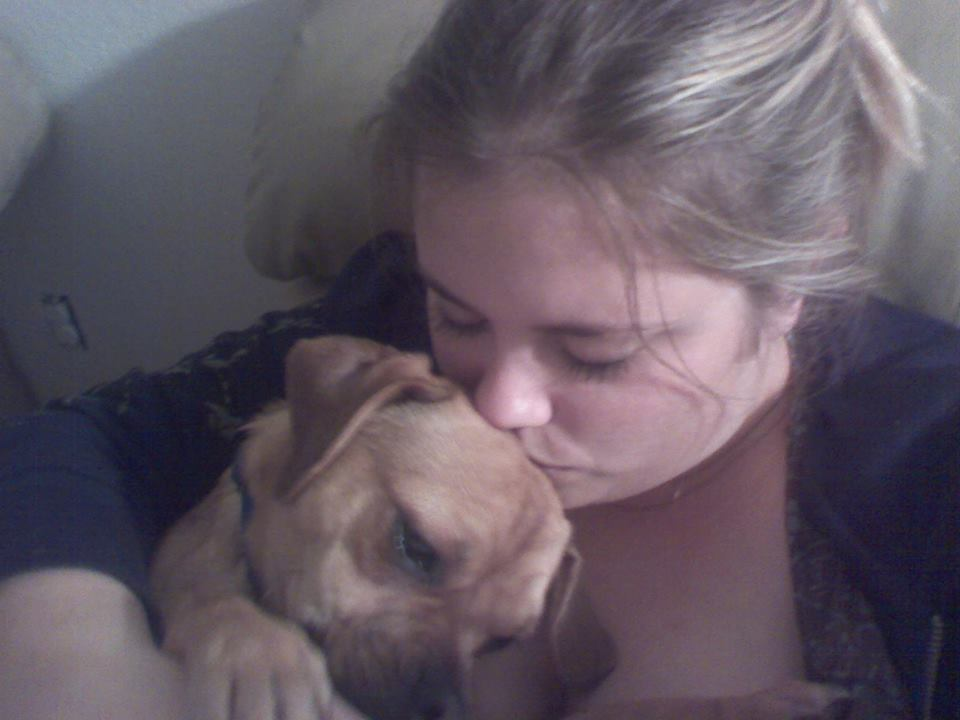

Description
A card game for you Terminator fans. The game starts with all cards laying face down showing skynet on the back. You will need to shoot two cards to show what character(s) are revealed. If both cards match, they will remain revealed while you hear liquid metal in the background. The object of the game is to turn over all pairs of the characters with the least amount of attempts as possible. This game includes sound effects, engaging you throughout the game. Check out how high you can get your accuracy score! To go back to Terminator Memory Match, click here.
Skills needed to create this game
- HTML
- CSS
- Bootstrap
- Javascript
- jQuery
The creator of this game is Chelsea Leopold
You can visit her portfolio here.